たびログ の紹介ページへ戻る ・ DNGG-studio のアプリ一覧
たびログ の使い方
たびログは、行った場所・経路・いた時間を記録し、撮った写真・動画とあわせて旅を振り返るアプリです。記録は端末の中だけに保存します。
画像の1のような赤い番号と赤い枠は、押すところと、説明の番号です。
この説明は バージョン 1.0.0 の画面に合わせています（2026年11月23日）。画面はこれから変わることがあります。画像の記録は見本で、写真は見本のために描いた絵です。地図・施設の情報：© OpenStreetMap contributors
- はじめに：記録を始める・止める
- 1 日の記録を見る
- 写真・動画を見る・振り返りから外す
- 立ち寄った場所と施設の情報
- 旅を振り返る（スライドショー）
- 動画に書き出す
- 何日かの旅行をまとめる
- 自動で記録する
- 設定（間隔と電池・振り返り・デザイン・言語）
- 記録を削除する
- よくある質問
1. はじめに：記録を始める・止める
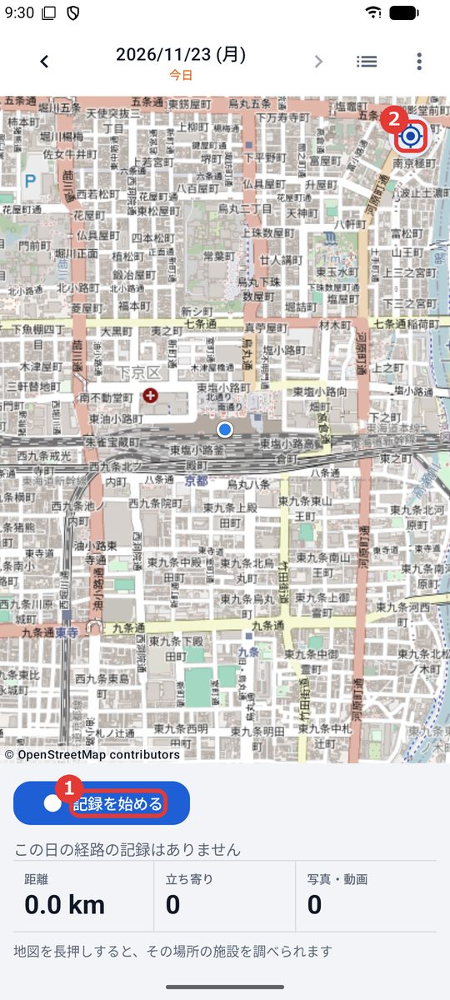
1「記録を始める」で記録を始めます。2を押すと地図が今いる場所（青い点）に動きます
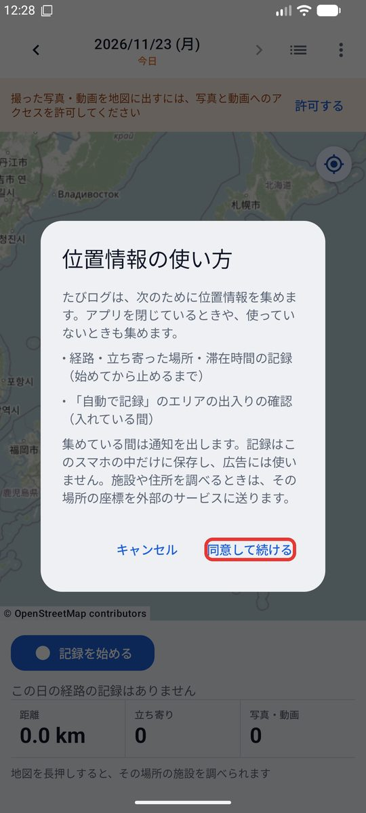
はじめてのときに出る説明。「同意して続ける」を押します
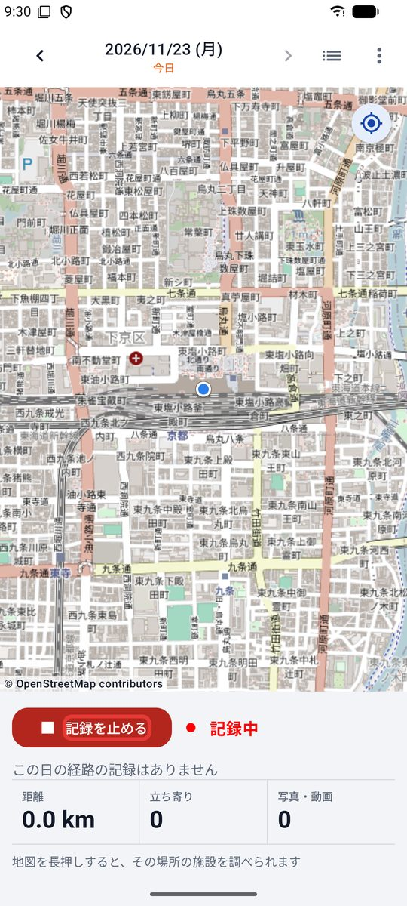
記録中は「記録中」と出ます。終わるときは「記録を止める」を押します
- 旅に出るときに「記録を始める」を押します
- はじめてのときは、位置情報の使い方の説明が出ます。読んで「同意して続ける」を押すと、位置情報と通知の許可を聞かれます。位置情報は「正確な位置」「アプリの使用時のみ」で許可してください
- 地図の上に「撮った写真・動画を地図に出すには…」と出たら、「許可する」を押して「すべて許可」を選びます（選んだ写真だけの許可では、旅の写真が出ません）
- 帰ってきたら「記録を止める」を押します
- 記録中は通知が出ます。アプリの画面を閉じても記録は続きます
2. 1 日の記録を見る
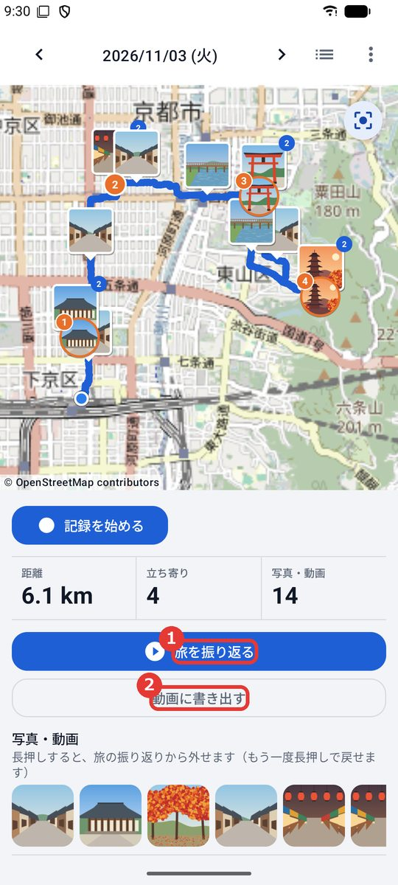
青い線が経路、オレンジの番号が立ち寄った場所、小窓が写真です。1「旅を振り返る」（5.）、2「動画に書き出す」（6.）
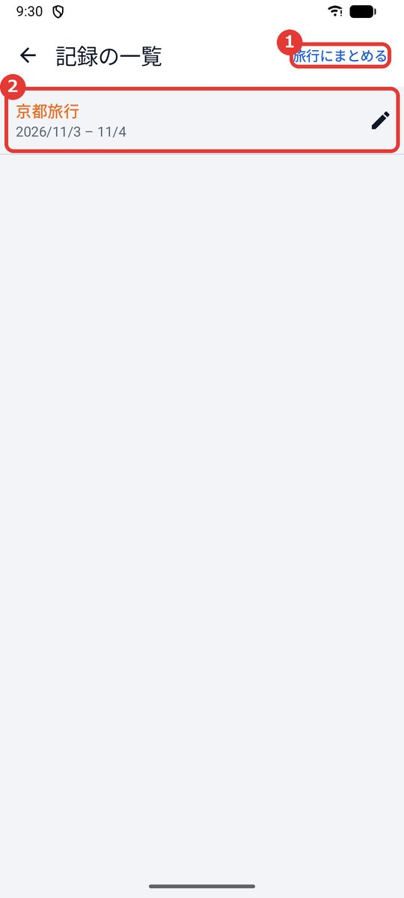
記録の一覧。2の行を押すと、その日（旅行）を開きます。1「旅行にまとめる」は 7.
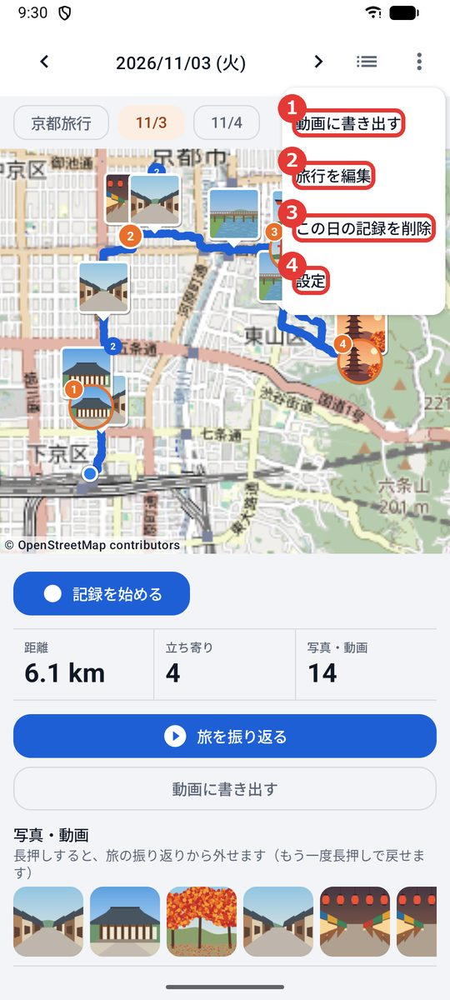
右上の「︙」のメニュー。1動画に書き出す、2旅行にまとめる・編集、3記録の削除、4設定
- 上の日付の左右の矢印で前の日・次の日へ、日付を押すとカレンダーから選べます
- 右上の一覧のボタンで「記録の一覧」を開きます
- 地図の右上のボタンで、経路全体が入るように戻せます
3. 写真・動画を見る・振り返りから外す
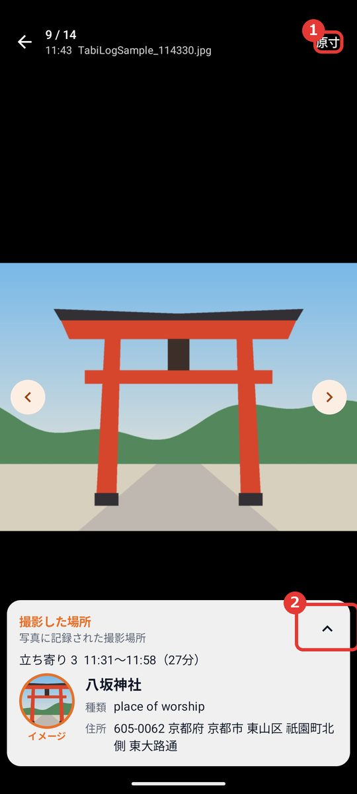
小窓や一覧の写真を押すと画面いっぱいに開きます。1「原寸」で原寸表示、2で下の場所の説明をたためます
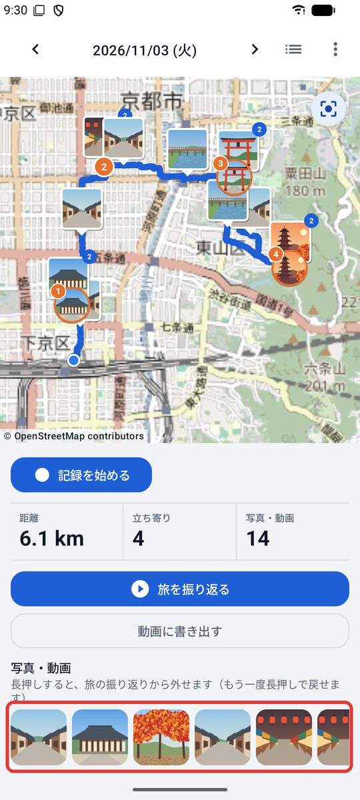
「写真・動画」の一覧。外したいものを長押しします
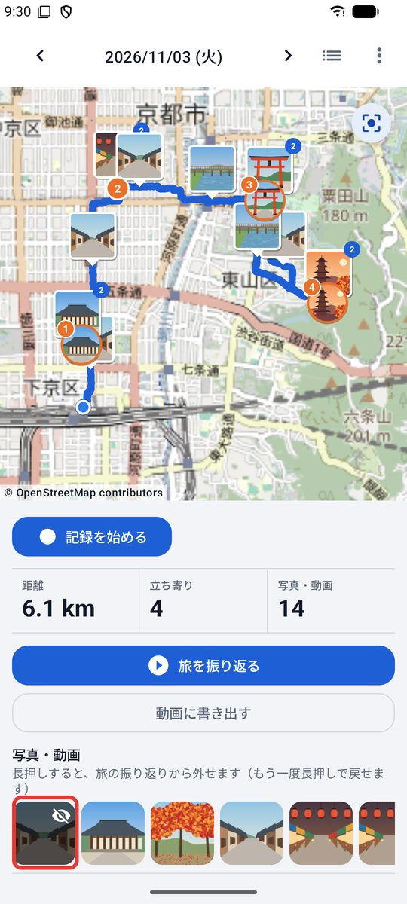
外したものは暗くなり、目に斜線の印が付きます。もう一度長押しすると戻せます
- 画面のスクリーンショットなど、旅に関係のない写真・動画は、長押しで振り返りと書き出しから外せます。端末の写真は消えません
- 撮影場所の記録がない写真は、撮った時刻と経路から場所を推定します。分からないものは地図に出ません
4. 立ち寄った場所と施設の情報
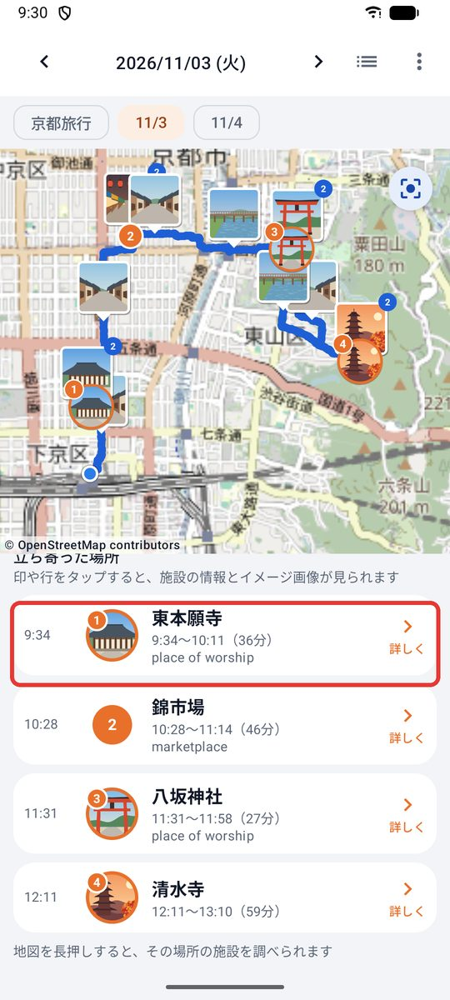
下へ送ると「立ち寄った場所」。行か地図の番号を押すと、施設の情報が出ます
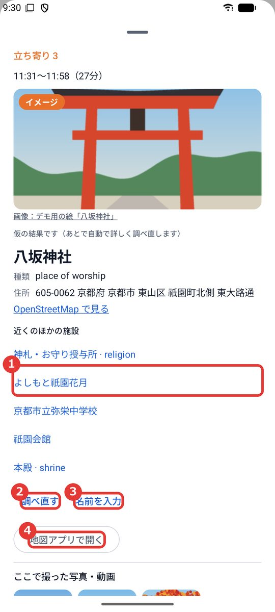
違う施設が出たら、1「近くのほかの施設」から選ぶ、2「調べ直す」、3「名前を入力」で直せます。4は地図アプリで開きます
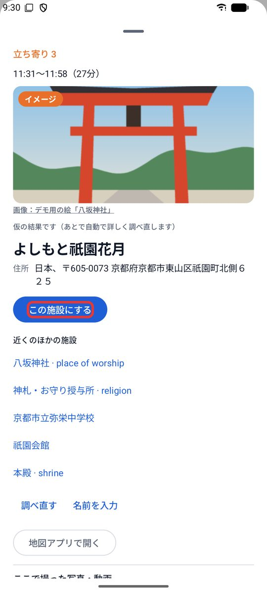
ほかの施設を選んだら、「この施設にする」を押すと決まります
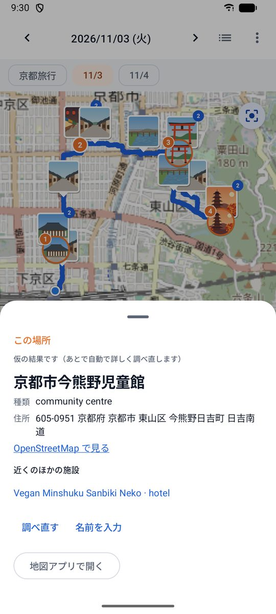
地図を長押しすると、その場所の施設を調べられます
- 同じ場所にしばらくいると「立ち寄り」になり、着いた時刻・出た時刻・いた時間が残ります
- 施設の情報は、その日を開いたときに自動で調べます（通信が要ります）。「仮の結果です」と出たものは、あとで自動で調べ直します
- 「イメージ」の画像は、Wikipedia などにあるその場所の写真です
5. 旅を振り返る（スライドショー）
1 日の画面の「旅を振り返る」を押すと始まります。
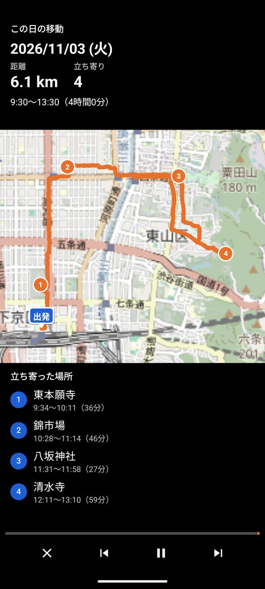
はじめに、その日の経路・距離・立ち寄った場所の全体が出ます
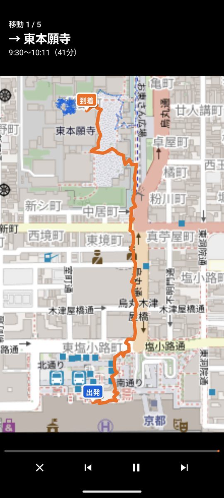
移動ごとに、出発から到着までの経路をたどります
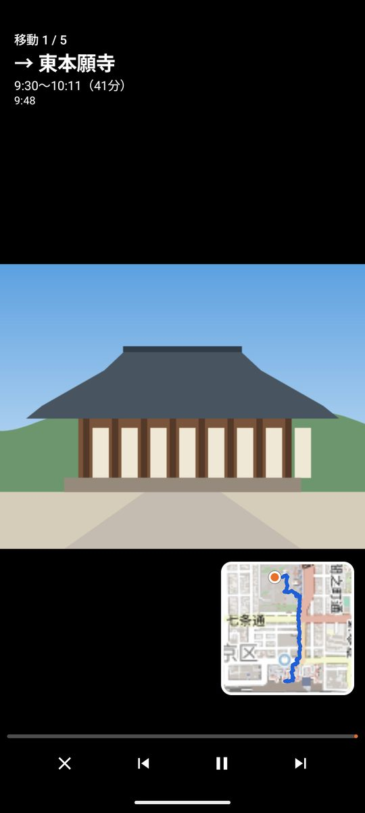
続けて、その移動で撮った写真・動画が出ます。右下の地図の点が撮った場所です
- 下のボタンは、左から「閉じる」「前の移動へ」「一時停止・再生」「次の移動へ」です
- 写真・経路の時間や音楽は、設定の「旅の振り返り（スライドショー）」で変えられます（9.）
6. 動画に書き出す
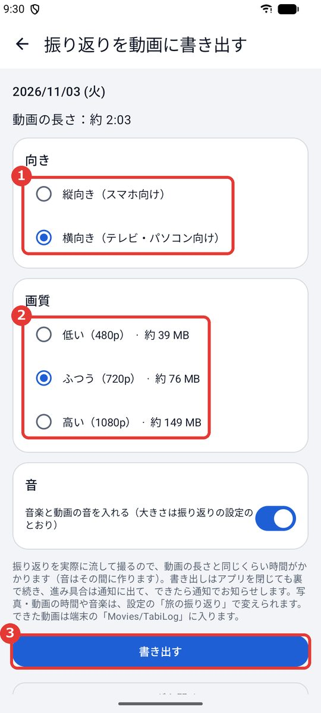
1向き、2画質を選び、3「書き出す」を押します
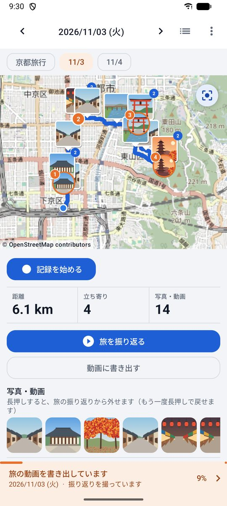
1 秒後に日の画面に移り、下の帯に進み具合が出ます
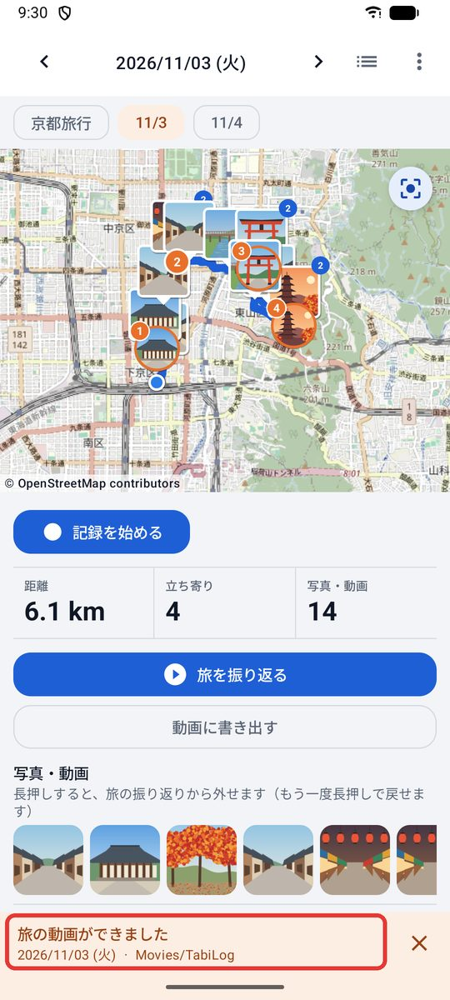
できたら帯を押します（× で閉じられます）
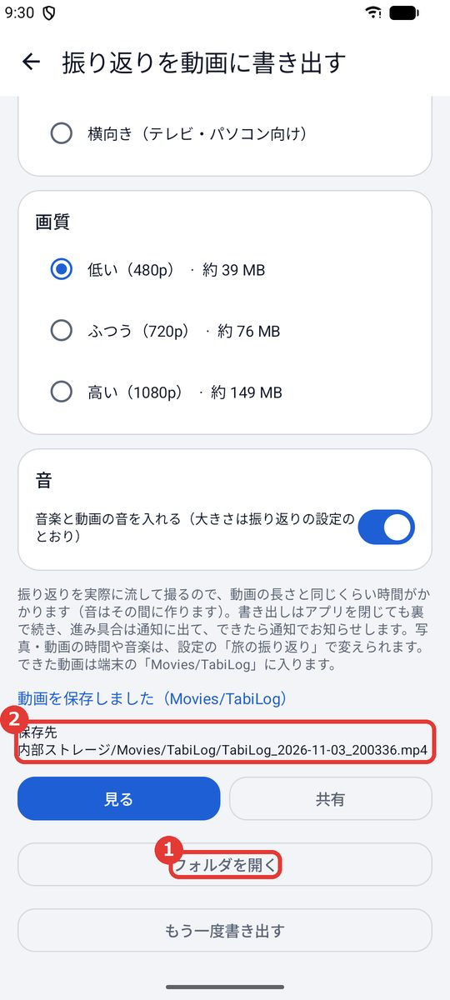
1「フォルダを開く」で保存したフォルダを開きます。2は保存先のパスです
- 振り返りを実際に流して撮るので、動画の長さと同じくらい時間がかかります。アプリを閉じても裏で続き、できたら通知でお知らせします
- できた動画は、端末の「内部ストレージ/Movies/TabiLog」に入ります。「見る」で再生、「共有」で LINE などに送れます
- 前に書き出した動画は、書き出す画面の下の「フォルダを開く」からも探せます
- 途中でやめるときは、帯を押して「キャンセル」を押します
7. 何日かの旅行をまとめる
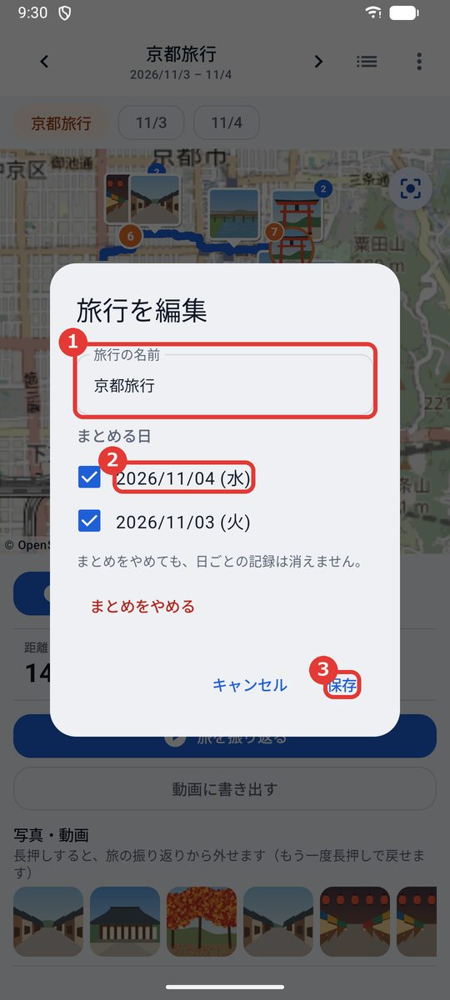
1旅行の名前を入れ、2まとめる日に印を付け、3「保存」を押します
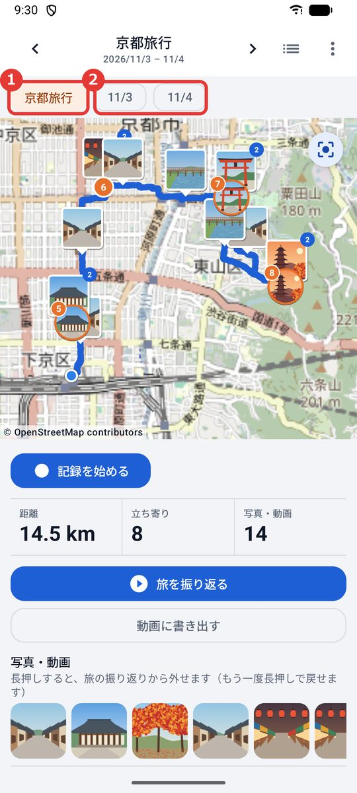
上のボタンで、1旅行全体と2日ごとを切り替えます
- 「記録の一覧」の右上の「旅行にまとめる」（または日の画面の「︙」→「旅行にまとめる・名前をつける」）を押します
- 名前を入れ、日を選んで「保存」を押します
- 旅行全体を選んで「旅を振り返る」「動画に書き出す」を押すと、何日か分をつなげて作ります
- 「まとめをやめる」を押しても、日ごとの記録は消えません
8. 自動で記録する
家のまわりなどの「いつものエリア」を決めておくと、出たときに記録を始め、入ったときに止められます。
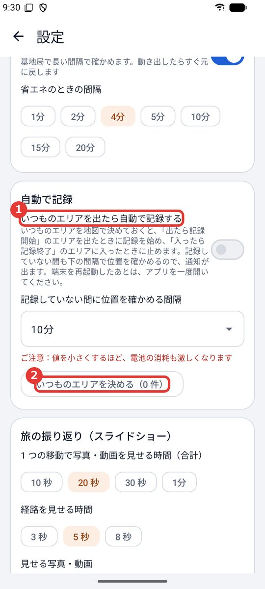
「︙」→「設定」。先に2「いつものエリアを決める」を押します。エリアを決めたら1のスイッチを入れます
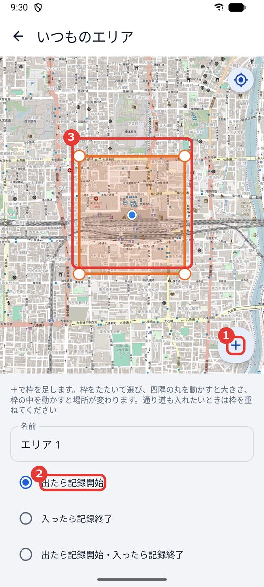
「新しいエリア」を押し、3枠の四隅の丸で大きさ、枠の中で場所を変えます。1＋で枠を足せます。2で動きを選びます
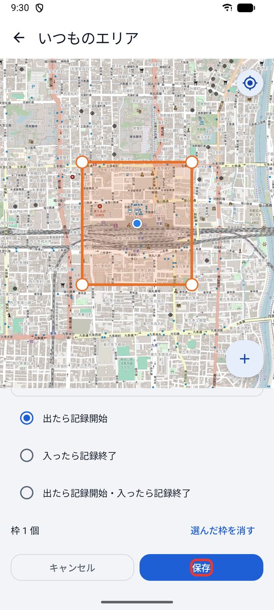
下へ送って「保存」を押します
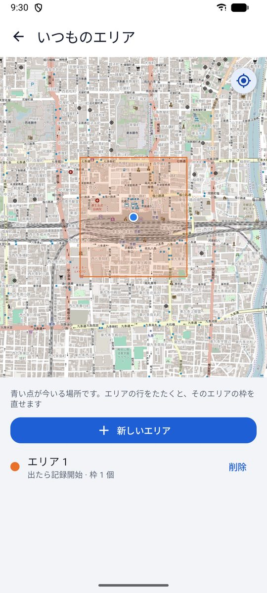
決めたエリアの一覧。行を押すと直せます
- 動きは「出たら記録開始」「入ったら記録終了」「出たら記録開始・入ったら記録終了」から選びます
- 記録していない間も、決めた間隔で位置を確かめるので、通知が出ます
端末を再起動したあとは、アプリを一度開いてください。開くまでは自動で記録しません。
9. 設定（間隔と電池・振り返り・デザイン・言語）
日の画面の右上の「︙」→「設定」で開きます。
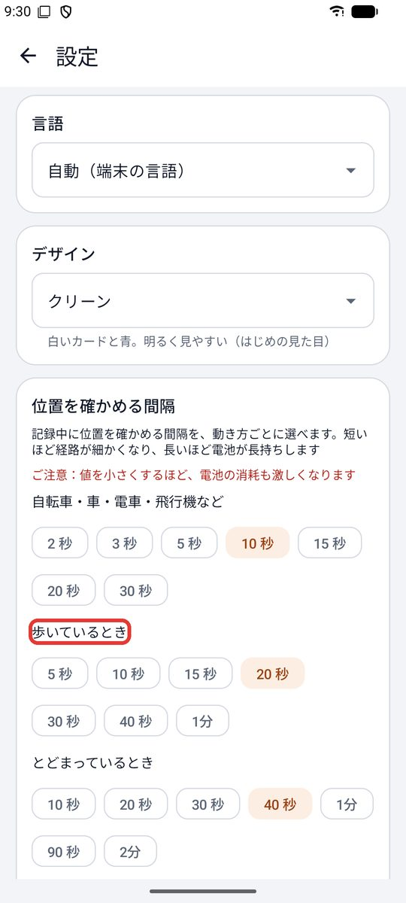
動き方ごとに間隔を選びます。値を小さくするほど、電池の消耗も激しくなります
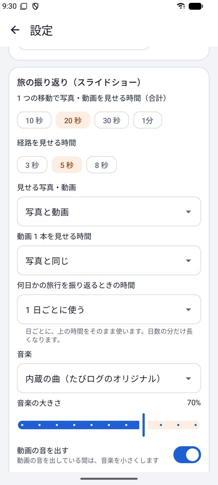
振り返りの時間・見せるもの・音楽
| 項目 | 内容 |
|---|
| 言語 | 「自動（端末の言語）」か、12 の言語から選べます |
| デザイン | クリーン・ペーパー・ミッドナイト |
| 位置を確かめる間隔 | 乗り物・歩き・とどまっているときの間隔。短いほど経路が細かくなり、長いほど電池が長持ちします |
| 同じ場所に長くいるときは省エネ | 5 分ほど同じあたりにいたら GPS を止め、長い間隔で確かめます。動き出すとすぐ元に戻ります |
| 自動で記録 | 8. をご覧ください |
| 旅の振り返り | 写真・動画の時間、経路の時間、見せるもの、動画 1 本の時間、旅行の時間の使い方、音楽（内蔵の曲・端末の曲・なし）、音の大きさ |
| このアプリについて | プライバシーポリシー、バージョン。同意が必要な地域では「広告のプライバシー設定」も出ます |
10. 記録を削除する
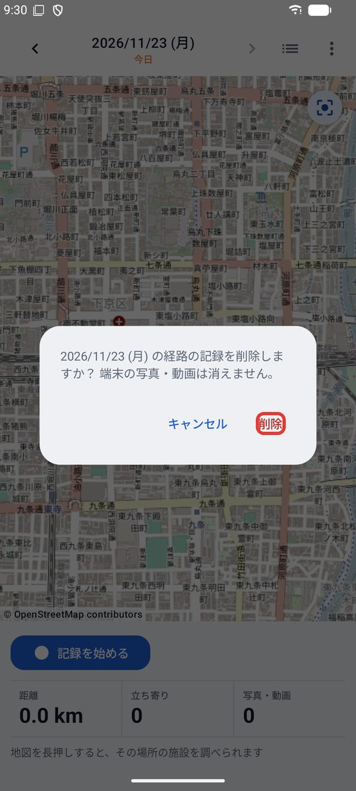
「︙」→「この日の記録を削除」→「削除」
その日の経路の記録が消えます（元に戻せません）。端末の写真・動画は消えません。
11. よくある質問
書き出した動画はどこにありますか？
端末の「内部ストレージ/Movies/TabiLog」です。書き出しの画面の「フォルダを開く」で開けます（6.）。
写真が地図に出ません
写真と動画の許可が「すべて許可」になっているか確かめてください。記録のない日や、撮影場所が分からない写真は地図に出ません。
電池の減りが気になります
設定の「位置を確かめる間隔」を長くし、「同じ場所に長くいるときは省エネ」を入れてください。
記録が途中で止まります
端末の設定で、たびログの電池の使用を「制限なし」にすると、止まりにくくなります（名前は機種によって違います）。
記録はどこに保存されますか？
端末の中だけです。アプリを削除すると記録も消えます（書き出した動画と写真は残ります）。施設や地図を調べるときだけ、その場所の座標などを外部のサービスに送ります。詳しくはプライバシーポリシーをご覧ください。
広告はいつ出ますか？
旅の振り返りのあとと、動画の書き出しのあとです。はじめの 5 回（あわせて）と、前の広告から 10 分の間は出ません。
お問い合わせ
DNGG-studio：dngg.studio@gmail.com
地図・施設の情報：© OpenStreetMap contributors。Google Play、Wikipedia などの名前は、それぞれの権利者の商標です。
紹介ページへ戻る